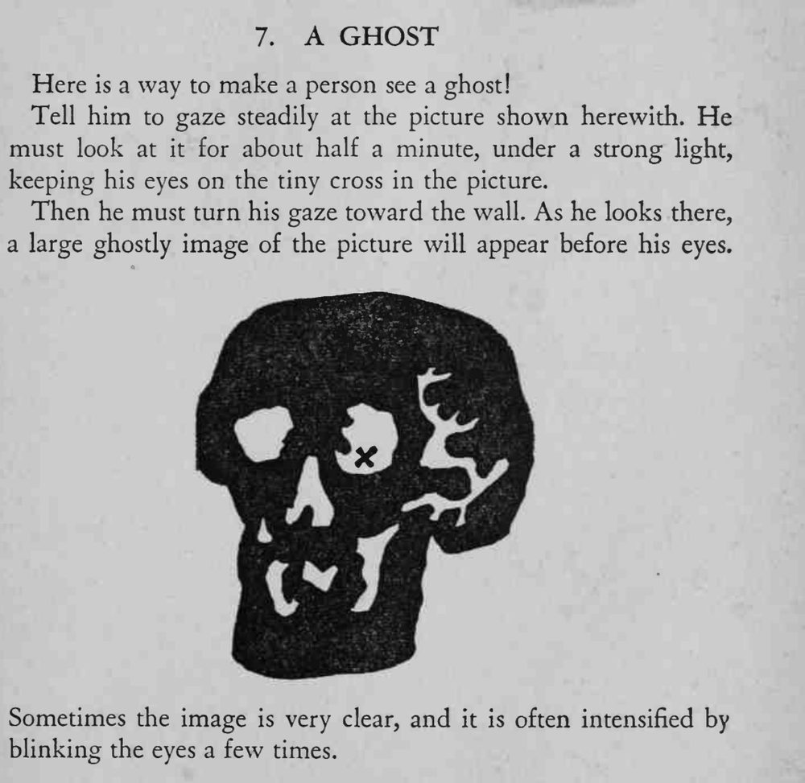

让人盯着图上的小十字看半分钟，再把目光移向白墙，墙上就浮现出一个巨大的幽灵影像。
这是视觉后像，盯的时间要足、光线要强。

Here is a way to make a person see a ghost! Tell him to gaze steadily at the picture shown herewith. He must look at it for about half a minute, under a strong light, keeping his eyes on the tiny cross in the picture. Then he must turn his gaze toward the wall. As he looks there, a large ghostly image of the picture will appear before his eyes. Sometimes the image is very clear, and it is often intensified by blinking the eyes a few times.